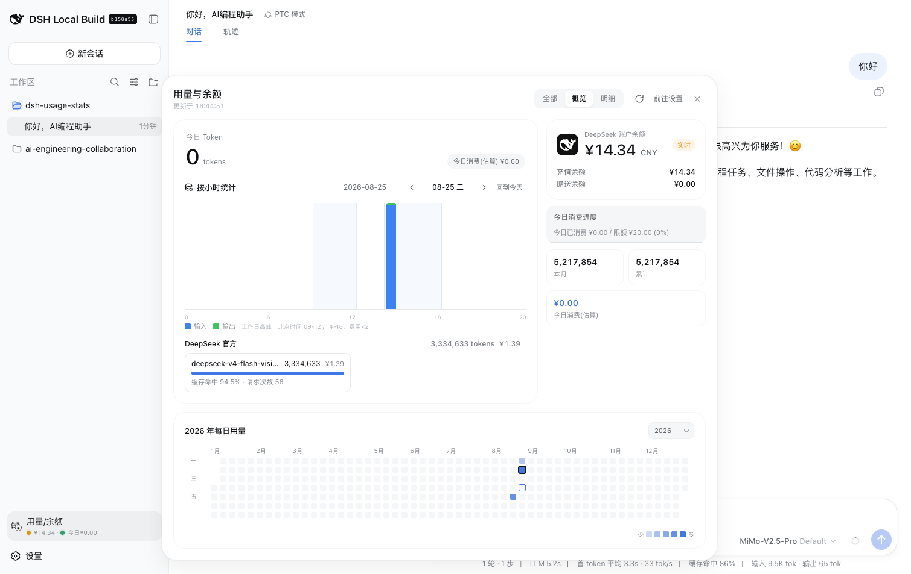
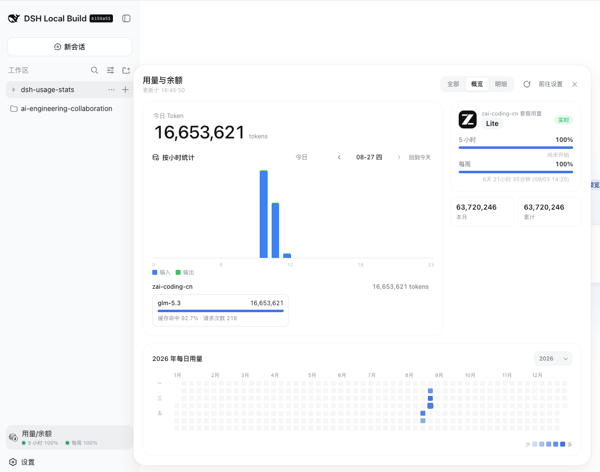
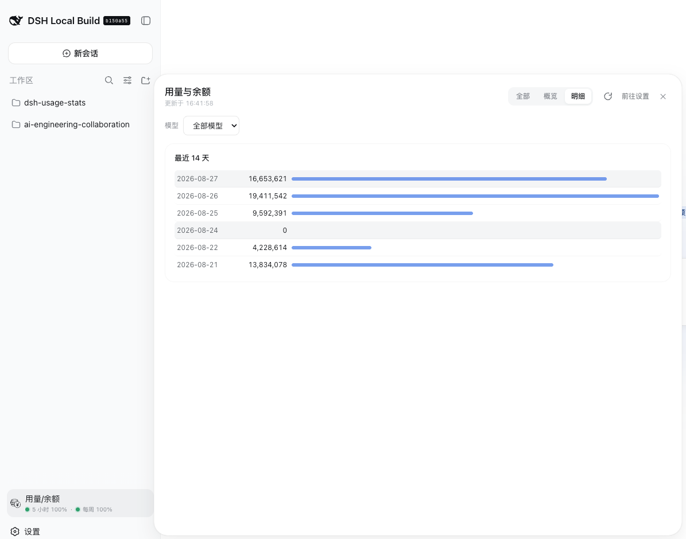
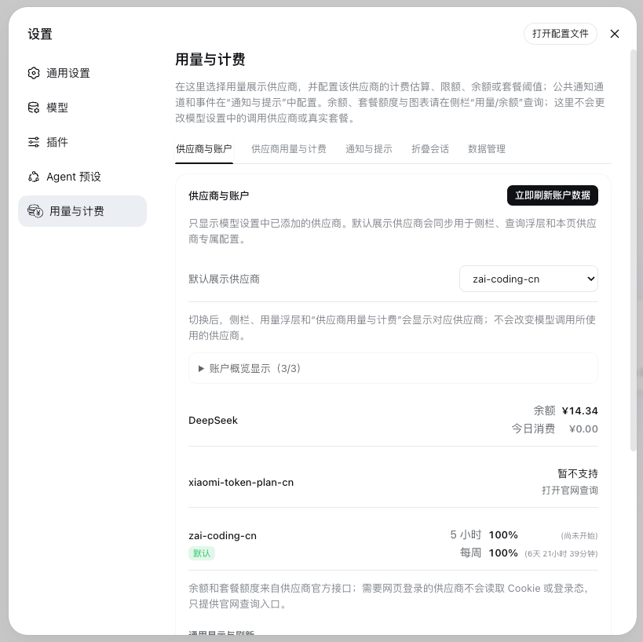

调用、成本与趋势
今日、本月、累计 Token、请求次数、模型拆分、24 小时趋势与年度热图。DeepSeek 调用按完成时间冻结费用，历史成本不随后续价格漂移。
LOCAL-FIRST OBSERVABILITY
WHY DSH USAGE STATS
今日、本月、累计 Token、请求次数、模型拆分、24 小时趋势与年度热图。DeepSeek 调用按完成时间冻结费用，历史成本不随后续价格漂移。
DeepSeek、Moonshot、OpenRouter、Kimi、MiniMax、Z.ai 等已配置 provider 的余额、套餐窗口与 Token 数据统一呈现。
配置消费限额、余额提醒与预警比例。仅在你显式开启时才会拦截新的模型调用，其余时刻只做安静的记录者。
统计账本按宿主 per-record 存储按日落盘，单个文件损坏不再影响整个状态；凭据只通过 Harness 服务端解析。
PRODUCT TOUR




GET STARTED
插件 0.4.0 已发布 npm；要求 DeepSeek Harness dsh-v0.1.1-rc.2 或更新版本，以及 Node.js 18+。
dsh plugin --profile web add ./dsh-usage-statsdsh plugin --profile web add @wannanbigpig/dsh-usage-stats